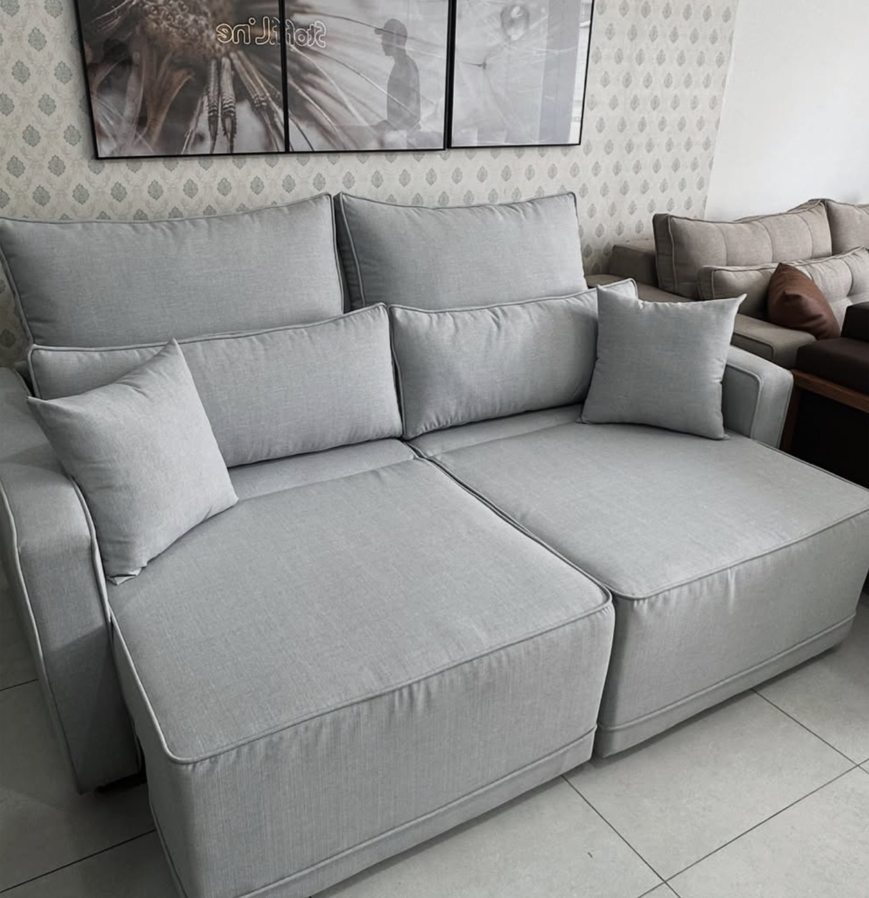
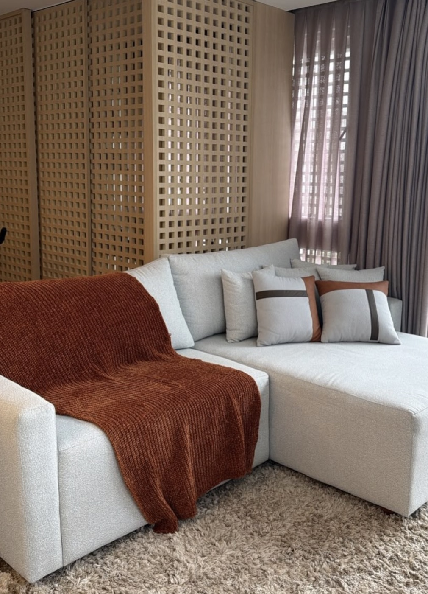
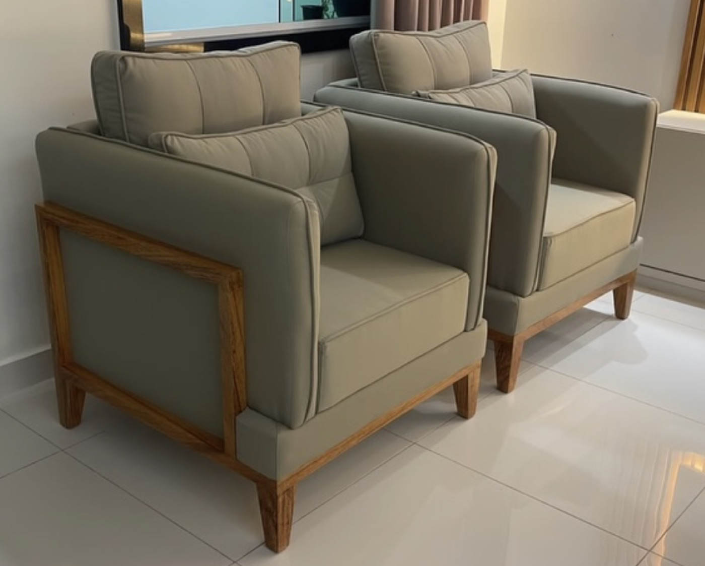
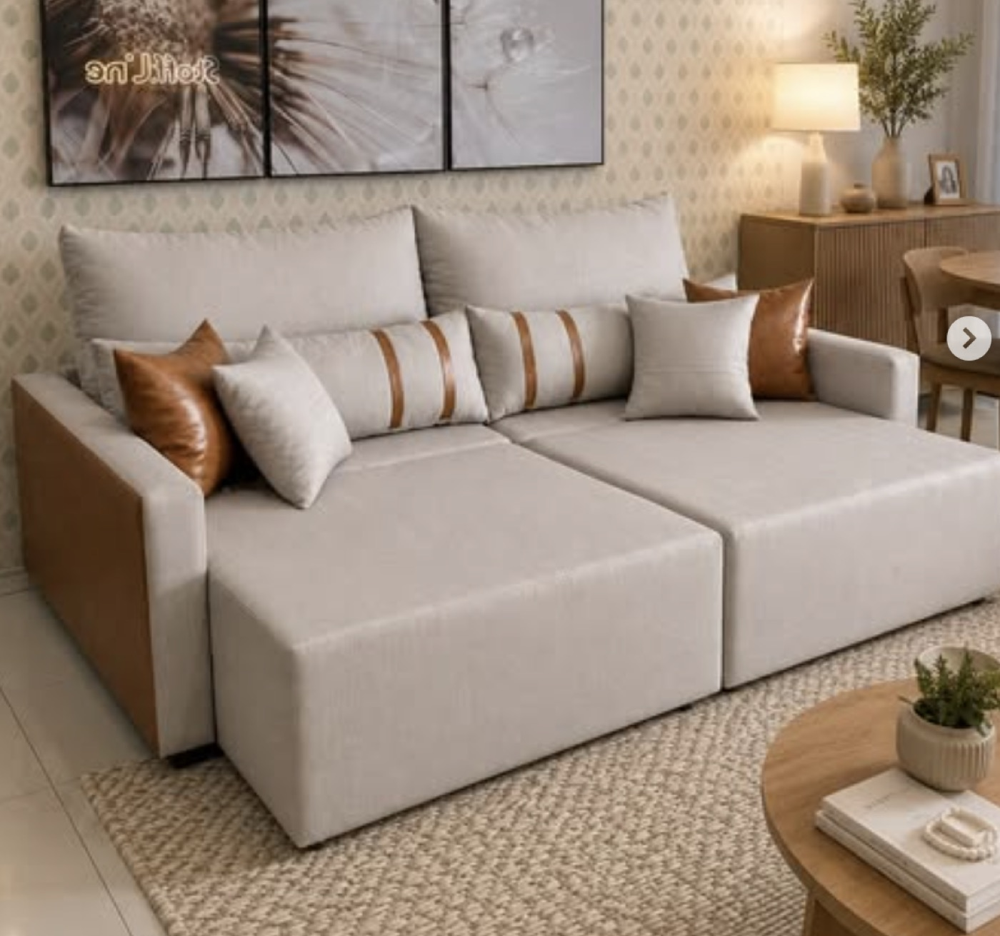
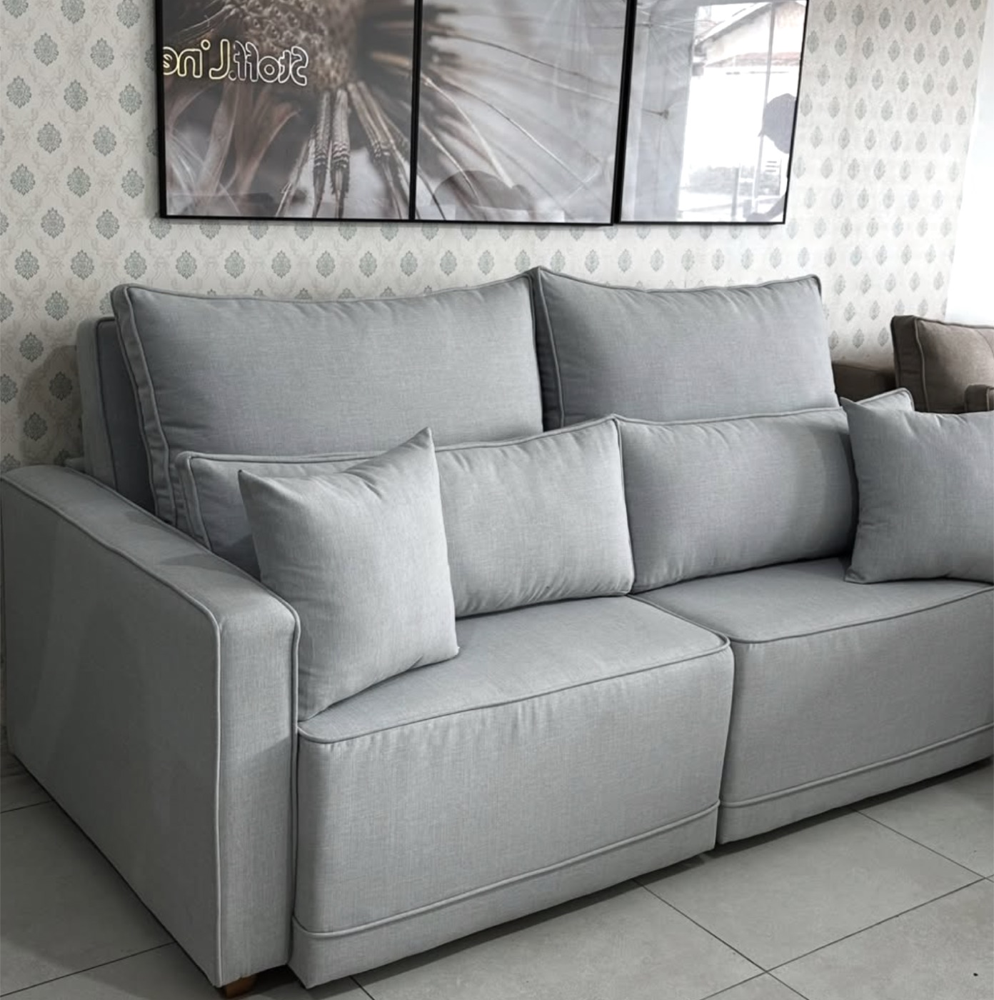
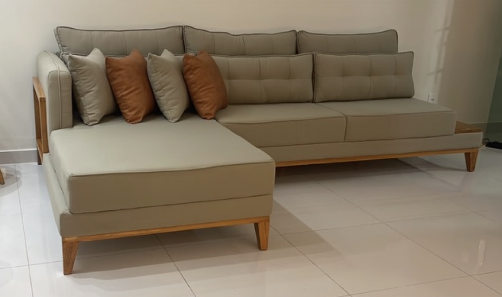
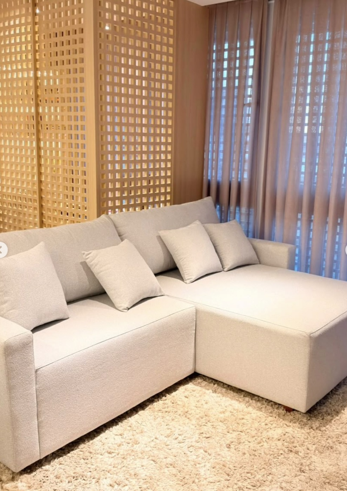
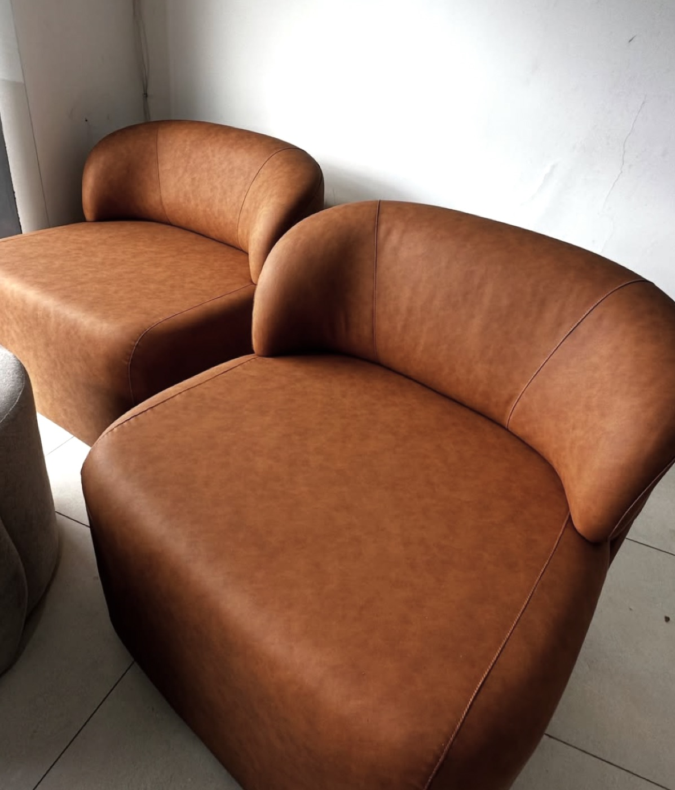
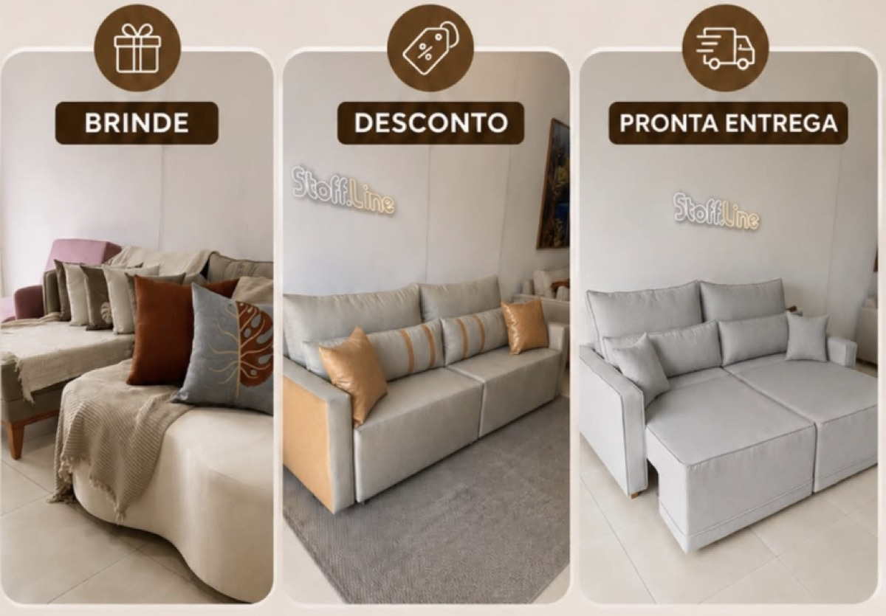

Retrátil e reclinável
Monarc
Assentos que avançam e encosto reclinável — conforto de fim de tarde para a família inteira.
Pedir orçamento
Não vendemos o que sobrou no estoque: fabricamos o sofá certo para a sua sala, na medida, no tecido e no conforto que você escolher. Da primeira conversa à entrega, tudo sai da nossa fábrica.
Somos fabricantes, não revenda. Você fala direto com quem produz.
Largura, profundidade e altura ajustadas ao seu ambiente.
Linho, veludo, chenille, bouclê e couro sintético em dezenas de cores.
Equipe própria em Feira de Santana e atendimento online para todo o Brasil.
A Stoff Line é uma fábrica de estofados em Feira de Santana. Isso muda tudo: o projeto, a estrutura, a espuma, o corte do tecido e o acabamento acontecem sob o mesmo teto — e sob o mesmo controle.
“O sofá mais barato pode ser o sofá mais caro da sua casa.”

Todo modelo abaixo pode ser refeito na sua medida, no seu tecido e na sua cor. Use como ponto de partida — o resto a gente desenha com você.

Assentos que avançam e encosto reclinável — conforto de fim de tarde para a família inteira.
Pedir orçamento
Combinação de tecido e couro sintético no mesmo projeto, com braços largos e almofadas soltas.
Pedir orçamento
Feito para apartamentos: ocupa pouco fechado, vira cama de sofá quando abre.
Pedir orçamento
Base em madeira aparente e capitonê discreto — o clássico que cabe em qualquer decoração.
Pedir orçamentoVolumes generosos em bouclê texturizado, com módulos que se reorganizam quando você mudar de casa.
Pedir orçamento
Linhas retas, chaise ampla e assento profundo para quem gosta de deitar no sofá, não só sentar.
Pedir orçamentoEstrutura de madeira aparente emoldurando o estofado. Perfeita em dupla na sala ou no quarto.
Pedir orçamento
Formas orgânicas em couro sintético caramelo — a peça que assina o ambiente.
Pedir orçamentoQuatro etapas simples. Você acompanha cada uma delas direto com a fábrica.
Você manda a foto do espaço e conta como usa a sala. A gente entende o tamanho, a rotina e o estilo.
Definimos modelo, medidas exatas, tecido, densidade da espuma e acabamento. Orçamento fechado, sem surpresa.
Seu sofá entra na linha da fábrica: estrutura, espuma, costura e acabamento, com conferência peça a peça.
Levamos até você, montamos no lugar certo e só saímos quando estiver do jeito que você imaginou.
Trabalhamos com tecidos de fácil limpeza, alta resistência e caimento bonito. Estas são as famílias mais pedidas — o mostruário completo está no showroom.
Textura natural e visual leve
Volume macio e aconchegante
Brilho suave e toque aveludado
Resistente ao dia a dia intenso
Limpeza rápida, cara de couro
Aveludado em tons profundos
Tem pet ou criança pequena em casa? Indicamos o tecido certo para cada rotina — impermeável, antimanchas ou de alta abrasão.
Falar com um consultorClique para ampliar e ver os detalhes de acabamento de perto.
Bastidores da fábrica, detalhes de acabamento e o sofá em movimento.
[Espaço reservado para depoimento real de cliente. Copie aqui um dos feedbacks do destaque do Instagram, junto com o nome e o bairro/cidade.]
[Espaço reservado para depoimento real de cliente. Prefira relatos que citem prazo de entrega, conforto ou acabamento.]
[Espaço reservado para depoimento real de cliente. Vale incluir também clientes atendidos online, de outras cidades.]

Todo mês liberamos um lote com condição diferenciada: peças de pronta entrega, desconto no projeto sob medida e brinde na finalização. Consulte o que está valendo hoje.
Ver condições de hojeFabricamos. A Stoff Line tem fábrica própria em Feira de Santana — do projeto ao acabamento, tudo é feito por nossa equipe. Por isso conseguimos alterar medidas, espuma e tecido sem depender de terceiros.
Sim — é exatamente o que fazemos. Você envia as medidas do ambiente (ou uma foto com as dimensões) e desenhamos o sofá para caber certinho, inclusive em salas estreitas, corredores apertados e apartamentos compactos.
O prazo varia conforme o modelo, o tecido escolhido e a fila de produção do momento. Peças de pronta entrega saem bem mais rápido. Fale com a gente no WhatsApp que informamos o prazo atualizado do seu projeto.
Sim. Além do atendimento presencial no showroom, atendemos online e enviamos para outras cidades. Consulte as condições de frete para o seu endereço.
Claro. Nosso showroom fica na Rua Frei Caneca, 281 — São João, e funciona de segunda a sexta das 8h às 17h (sem fechar para almoço) e aos sábados das 8h às 12h. Lá você testa o conforto e vê o mostruário completo de tecidos.
Depende da rotina da casa. Em geral indicamos tecidos de alta abrasão, impermeáveis ou o couro sintético, que limpa com pano úmido. Conte como é o dia a dia na sua casa que sugerimos as melhores opções.
Preencha ao lado e o pedido vai direto para o WhatsApp da nossa equipe, já organizado. Se preferir, chame no WhatsApp ou venha até o showroom.
Sentar no sofá antes de comprar muda tudo. Passe no showroom para testar o conforto, ver o acabamento de perto e conhecer o mostruário de tecidos.